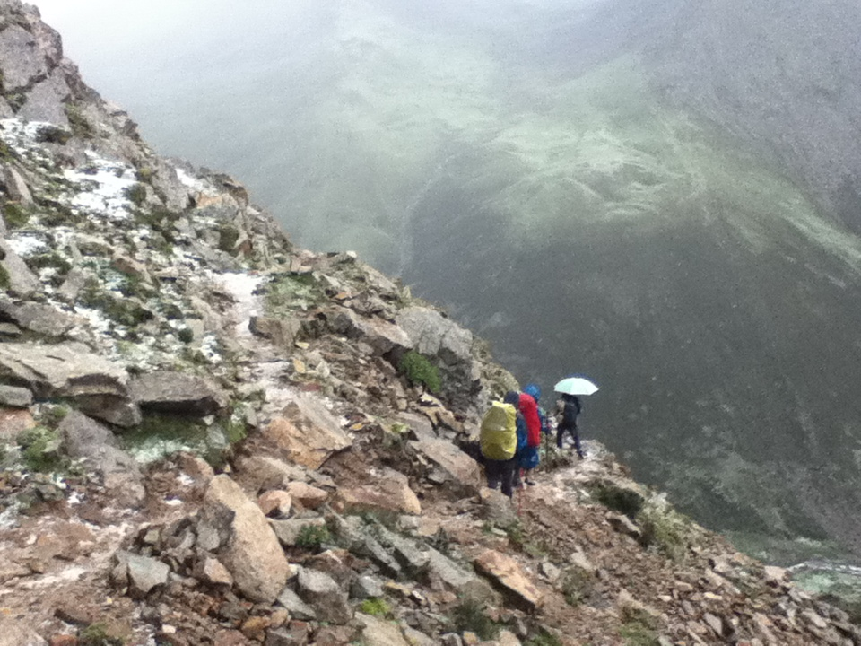
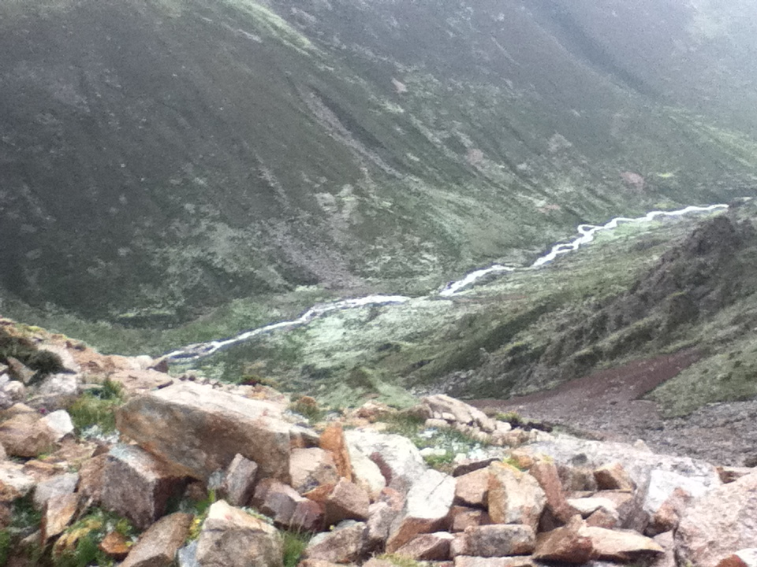

发信人: cccccm (如影成风~), 信区: outdoor
标 题: 徒步在云间---记甘丹寺到桑耶寺的四天三夜
发信站: 饮水思源 (2012年07月26日00:02:33 星期四)
走甘丹寺到桑耶寺其实也是一个偶然。前一天晚上接到消息说本来和我们一起去珠峰的那
几个人不去了，然后我们的行程就全被打乱了。于是临时决定走甘丹寺到桑耶寺，一个是
体验一下高原重装徒步的感脚，一个是感受一下高原扎营的感脚。现在想来当时的决定确
实有些草率，没做过攻略没有GPS没有航迹没有向导路上没有登山鞋没有装备听说也没有驴
友，只有一张地图~！！
screen.width - 200){this.width = screen.width - 200}">
攻略上说徒步的时间为四天三夜（而且是从早上8点从拉萨出发的），而我们只能下午从拉
萨出发，于是整个行程变得紧凑起来，又要赶路又不知道地型只有张地图！！不过年轻嘛
，说走就走，匆匆的和客栈老板借了套装备（坑爹的帐篷和防潮垫！！还有，我们四个人
只有三件冲锋衣，有两件还漏水，这些都为后面的苦逼生活埋下了伏笔），中午逛完布达
拉宫吃完娜玛瑟德以后，我们就潇潇洒洒的出发了。
D1 拉萨-甘丹寺-黑布村
15：30 从拉萨出发
然后然后！！！我们没准备热餐，在路上买了3斤卤牛肉，36个6毛一个没有任何味道只能
下水吃的饼子，5个桃子，一个茶壶（本来想用牛粪烧火再采点野菜煮煮的，然后必须木有
用上 = =），三块压缩饼干，4瓶过期酸奶（我会告诉你们我买时候没看生产日期么！ ！
），四根火腿肠。我们的计划是，饿了就吃，一次一个饼子加点山泉水，一天一斤牛肉，
第二天路途艰苦一些喝杯酸奶。Orz这计划简直太苦逼了。我特么徒步这么多次从来木有这
么苦逼过。当然，我们出发的时候还是很高兴的，觉得体验一下不一样的生活搞不好也会
过的很舒服的（太天真了这群孩子）。
出发时候天气真好啊掏机机一路拍啊拍。然后就开始一路山路崎岖上甘丹寺了！
screen.width - 200){this.width = screen.width - 200}">
screen.width - 200){this.width = screen.width - 200}">
17：00 甘丹寺 海拔4200
一路沿着弯弯曲曲的山路盘旋了10km，远远的看着甘丹寺矗立在两山之间，在阳光的照耀
下灿灿发光，一群人那叫一个兴奋啊，手舞足蹈的发微博艾特小俞，啊哈哈哈哈。
screen.width - 200){this.width = screen.width - 200}">
之后逛了一阵寺庙，超喜欢甘丹寺的感觉，墙壁上歇着三三两两的小鸟，偶有僧人路过，
干干净净的青石板路面，还有超帅的旱厕！啊哈哈哈哈~~甘丹寺里面在装修，很多殿也都
不开（都木有收门票），我们爬到某个殿顶楼看了一通金顶，看了一通寺庙全景，还有远
方的windows桌面，然后就赶回寺庙门口，准备出发。
18：00 出发 沿山腰一直走草路和碎石山路
screen.width - 200){this.width = screen.width - 200}">
直接从甘丹寺左边的山路上山，沿着山腰一路像左切。路还是挺明显的，在山上视野也很
开阔，只要方向不错，妥妥的不会迷路。草路走的很爽，军胶毫无压力，不打滑不磨脚。
就是包有点重 = =。海拔4000多爬坡背个大包走着略微有点喘，不过一切问题不大，我们
一路暴走节奏（毕竟晚上6点才出发，咳咳）。
走到山拐角处，回头再望一眼远方伫立着的甘丹寺。
screen.width - 200){this.width = screen.width - 200}">
其实一路风景都超好。视野超开阔。比如左方是这样的
screen.width - 200){this.width = screen.width - 200}">
前方又是这样的，看起来好像我们要走入一片大雨之中。
screen.width - 200){this.width = screen.width - 200}">
暴走一小时要翻越山头的时候，大家就歇了一波，吃一波桃子！然后，表情都很亮啊啊哈
哈哈哈。
screen.width - 200){this.width = screen.width - 200}">
继续向前过一个更高的垭口，山对面的云像被大刷子刷了一下！
screen.width - 200){this.width = screen.width - 200}">
还有一群可爱的小牛
screen.width - 200){this.width = screen.width - 200}">
后来希哥看我们一路磨磨唧唧的，一怒之下冲到前面带路！
screen.width - 200){this.width = screen.width - 200}">
在希哥的带领下，我们迅速到达了黑布村！
screen.width - 200){this.width = screen.width - 200}">
20：45 黑布村 宿村民家 海拔4400
一进村就有哥们上来叽里呱来给我们讲了一堆藏语，然后完全听不懂的我们之后摊手摆无
奈状。幸运的是，又有一哥们一姐们冲过来问候我们，他们会讲一点汉语。然后我们就含
沙射影旁敲侧击的说“嗯，那个，你们好，那个，我们能不能晚上住去你们家哈？”无料
藏民兄弟很爽快说“可以呀”。然后我们又略警惕的问“呃，那个，一晚上多少钱哈？”
无料藏民兄弟又出乎我们意料的说“你们看着随便给点就好，给多少都行。”我们一行人
感动的五体投地。
之后就随着他们到了家里，家里极干净，就是家里那只狗叫的太凶了，听着那凶猛的狗叫
直接就虚掉了。还好狗被那姐姐抱住了，要不即使那狗被链子拴着我也不敢进去 = =！随
后我们就在他们家蹭吃蹭喝了啊哈哈哈哈，酥油茶是必不可少的！还在他家第一次吃到了
糌粑，那叫一个难吃啊Orz。。糌粑就是青稞面粉加了很多很多满是奶骚味酸酸的奶渣，然
后用酥油茶一冲！！然后就飘香满溢，满鼻子的黑芝麻糊香味！！可是一入嘴，真心就木
有食欲了。我，严皓，罗太，希哥强忍着吃了一会，然后骚皓好像吃完了屌爆！！估计他
真心饿的不行！！希哥说很好吃她超爱吃但是也就吃了一点点！！然后主人们看我们实在
吃的太痛苦，就微笑着说这东西要吃不下我们还可以弄去喂狗的，不要觉得不好意思。于
是我们就心安理得的把糌粑搁桌上不吃了 = =。
随后就滚去睡觉了。虽然窗外夜里各种雷雨，不过我都没发现！睡的超好，藏民家里面超
温暖。
D2 黑布村-舒卡拉哑口-山谷中的宿营地
8：00 起床
一群人磨磨唧唧的，起来啃了会饼，藏族哥们给我们送了好几壶热水，开了包牛肉，表示
早餐这么吃还是很爽的。之后查了一下我们带的那两帐篷，发现帐篷极其难搭，构造独特
，骚皓表示这东西要是碰到下雨目测要悲剧。不过也没办法，收起帐篷又磨蹭了一会，然
后出发。
9：30 出发
最后给了黑布村招待我们的藏民100块钱表示感谢，之后果断出发。一开始走可以通车的土
路，一路下坡，过河，走到某个有很多牛羊和牧民帐篷的山脚。
10：00 从海拔4200开始沿峡谷爬坡，一路草地加石海路
开始爬坡。一路天气都很好，小阴天，偶尔能看见远端的阳光洒满整个山谷。我们沿着溪
流一路逆行而上，溪边一直都有帐篷，还有牧民跟着俺们一起往上爬，心里非常踏实。一
路走的还是很爽的，军胶走草地完全无压力，不磨脚，脚底板也不疼，非常舒服。就是高
海拔重装爬坡比较累，走一会就喘不过来，得歇一下大口大口的喘会气。不过我们走的还
是很顺利的，背了个小包的希哥噌噌噌的就跟上队伍了，骚皓则一路在抱怨怂哥的破包勒
着他的肩膀疼。
走到11点半我们歇在小溪边开始啃饼。开始觉得那破饼味如嚼蜡了 = =！幸好卤牛肉还配
了点很香的辣椒粉，我就果断饼蘸辣椒粉了。此时希哥已经不能忍受那饼了，拿出块压缩
饼干啃起，边啃边赞叹“这压缩饼干好好吃啊”。我们三二逼在旁边直接被雷倒。
吃完饭继续爬坡啊。爬坡啊。爬坡啊。有段路走着走着走叉了，骚皓领着那两去问路去了
，包太重懒得理他们我就一路自己继续沿着溪边慢慢走。然后一路溯溪。沿着溪水穿过来
穿过去，穿着穿着水流没了，一路的大石头。走大石头路因为包重，军胶底薄，脚有点耐
不住。我就果断又跑到边上的草地贴着山脚慢慢往上爬，他们三就一路走大石头路。没跟
他们走以后，自己走脚步迈的比较大，走的比较快，不过走一会就得停下来大口喘会气（
他们步子迈的比较小，走的比较慢，不过就是没停一直走。我觉得这样走在高原上比较累
= =）。就这么一路穿一路爬，终于在15点的时候看到的舒卡拉垭口。然后一行人停下来
又啃了一会饼。= =。这之前我们遇到驴友了，一男一女一向导，神马装备都带了！！看着
他们准备做热餐的架势我就一阵伤感啊，我们这种屌丝做不起热餐只能默默啃饼。
16：00 舒卡拉哑口 海拔5240过垭口后一路沿左边山腰切到草地，右边是悬崖。一路被大
粒冰雹砸，淌河，
啃完饼就一波流直冲垭口了。啊啊啊！！爬了六个小时特么终于爬到顶了！！那股兴奋劲
！！垭口有一大个玛尼堆，好多好多经幡。我们一行人速速在垭口发福利拍照合影留念！
！（又提起伤心事了！！！）。
之后那两驴友也过来了。那大哥爬坡爬得要死了然后一怒之下在经幡上签了个到此一游（
这特么就是纯傻逼啊啊啊啊）。自从他写了“傻逼”到此一游之后，我们的这趟旅行彻彻
底底的被改变了！！
瞬间飘来一朵乌云。目测天气不对，我们迅速撤离垭口奔往营地。怎料行进在山腰的时候
，一阵冰雹从天而降。又密有大，砸在手上生疼。
 screen.width - 200){this.width = screen.width - 200}">
更悲催的是，我们四人只有三件冲锋衣，骚皓把冲锋衣给了希哥，穿了件抓绒带个鸭舌帽
就一路狂奔。据事后唏嘘，当时他的耳朵被砸的很惨，很惨，很惨。
 screen.width - 200){this.width = screen.width - 200}">
冰雹一路砸了近二十分钟，砸完希哥直接虚掉了。Orz。。顶着小雨我们顺利超过那两个可
恶的驴友，自己默默的赶到前面去了。
沿着山腰走了1个多小时，终于眼前是一片略开阔的山谷。也远远看到了牧民的帐篷。不过
过去得淌一条河。于是希哥换上严皓的洞洞鞋，我们军胶就直接淌了反正都湿了。淌完河
我就虚掉了，那河水，太TM冷了。双脚过完河之后就一直冰冰的，直接导致自己整个身子
发冷。撑着翻过一个小土包，看到牧民，是个大姐。问大姐能不能在她家帐篷借宿，她果
断不会说汉语，然后手舞足蹈的交流了一阵，最终结果是不能在她家借宿，但能去她帐篷
里休息一下。冻得不行的我迅速就先过去了，他们三默默从后面也跟上来。
18：00到藏民帐篷烤火，失温
滚到他家帐篷以后，他们帮我们烧了热水，围着锅炉烤了会火，温度没回上来，于是果断
拿出睡袋把自己裹起来，顺便拿了点味同嚼蜡的饼啃着。这时希哥也直接萎掉了，目测失
温，手心脚心全是冰凉的。打了一壶热水，让希哥抱着热水壶裹在睡袋里。严皓和罗太看
起来身体状态还行，围着火炉在烤衣服。
screen.width - 200){this.width = screen.width - 200}">
20：00 搭帐篷 晚饭 海拔5050左右
烤了两小时左右的火，期间不断的和大姐交流求蹭住（语言不通的人交流起来真心困难，
讲了半天都没讲到重点 = =），怎奈大姐家人口众多帐篷住不下，于是我们悻悻然的跑到
外面的一片小空地扎营了只好。之后罗太说他很冷，于是他接着裹睡袋回温，我和严皓就
滚去外面搭帐篷。
21：00 睡觉 睡觉时高反 睡一会起来大口喘气
迅速搭完帐篷，把那坑爹的吹气式防潮垫吹起来，然后把酸奶火腿肠干掉，啃了会饼（好
苦逼 = =），吃了点牛肉，果断就滚去睡觉了。
睡眠中很痛苦，睡一会就喘不过气了。只好把头从睡袋中伸出来大口喘会气，然后又接着
睡。高海拔扎营真心蛋疼。
D3 营地-卡图拉垭口-乃果村
8：30 起床
一大早，牧民大姐就热心的敲了我们帐篷的门问我们要不要热水，睡眼惺忪的我们真是感
动的涕泗横流。果断连声说着谢谢蹭了壶热水！！
起来后大家互相交流了一下睡眠质量！我一度以为睡觉的时候希哥一直在大声打呼噜！谁
知一交流，原来是山谷里的牛儿寂寞了，来帐篷边上看我们，一边看还一边呼唤，搅得我
们不得安宁。不过还好的是，整个睡眠过程中木有被冻到。客栈老板租给我们的睡袋还是
比较给力，虽然奇形怪状的。
天依旧阴着，我们慢腾腾的啃了会饼 = =， 把最后一包牛肉开了切掉吃掉，慢腾腾的收防
潮垫收睡袋，又慢腾腾的把帐篷收了打包。终于在磨叽了2个多小时后，准备出发。
10：45 出发 沿着河流在山谷中前进 类沼泽路 草地加溪流 下小冰雹
吃饱喝足！！天气正好！小阴天的节奏！！果断出发。沿着河水下流的方向，一路向前。
超喜欢这段路的感觉，两边都是青山，沿着蜿蜒的小河徜徉而上，一路踩着软软的草地，
身边有三两牦牛安静的吃草。走着走着，左边粗线了一个不大不小的湖，水是绿色的，和
草一样的颜色，天气好一定会很漂亮。走着走着，前面又出现了那两驴友，心里一阵咯噔
，完了。悲剧又将开始。
命运果然很给面子！当我们沿着河流在山谷中一路穿梭的时候，天上飘来一片云，然后簌
簌的小雨就下下来了。希哥那小破外衣，果断很快就湿掉了。悲剧的是，这是天上的小雨
已经变成了小雹子。于是我把我的冲锋衣给了希哥，我把严皓的抓绒穿上，湿湿的鸭舌帽
带上，继续前进。由于每次见到那两个驴友都很倒霉，我们就一路往前赶路试图摆脱他们
。严皓走最前面，我走最后。路不是很好走，一直是高低不平的草地（不知道该怎么描述
那种路段），走一阵子要穿一段略宽的大石头路，由于下雨，石头非常非常滑，希哥过大
石头的时候很慢（城里人要多加锻炼啊啊啊！！！）。天气不见好转，身上越走越冷，垭
口还望不到。略微走的有点绝望，蛋疼，身上特么的冷。于是登山杖也不用了，双手插口
袋里，慢悠悠的跟在希哥后面。
然后然后，过一个大石头的时候，希哥滑了，摔在石头上，登山杖也折了。把她拉起来，
她好像脑子有点蒙，整个人恍恍惚惚的不知该往哪走。只好一路带着她走。严皓这时也回
过头来，用魔术头巾把希哥手裹住保暖（她手冰冰凉 = =）。
后来没啥意外，雨稍微小了点。每当觉得身子冷的时候，就大声给队伍喊加油，然后抬头
看着远方的天，那边天空一片晴朗，给自己说，加油，走过去就暖和了，就有太阳了。
13：00 到达卡图拉垭口 垭口有小湖 雨停 海拔5090
最后一阵爬坡之后，终于到了卡图拉垭口。幸运的是，到了之后天气很给面子的晴了，回
头看来时的路，果然那两驴友不见了。全身都湿透了。把衣服拿下来晾了一会，啃了点饼
，吃了点肉。晒着晒着太阳，又一片云飘过来了，于是我们迅速收拾，又迅速的开始赶路
。过垭口的时候，看见石头中间竟然有个小湖，真心感慨大自然的鬼斧神工。
卡图拉垭口。
screen.width - 200){this.width = screen.width - 200}">
过了垭口，面前乍然出现了两个湖。伴随着飘飘渺渺的雾气，宛若仙境。
screen.width - 200){this.width = screen.width - 200}">
沿着湖边的大石头一路走，经过补充以后的我们行进速度有了明显的提高。最主要的是！
！身子不冷了！！！
screen.width - 200){this.width = screen.width - 200}">
15：00 穿过高原湖 泥路加大石头路 沿山谷下降 石头路到达某营地休整 午饭
穿过垭口到午饭这段走的是最舒服的一段。也不会迷路，顺着水流向下的方向走就对了反
正。阳光洒在我们身上，回头看我们来时的路一大片一大片的乌云，想着那两驴友还在我
们身后，心里就一直窃喜（罪过罪过）。这段目测是走的最开心的一段了，天气又好，又
是下坡，虽然都是大石头路，不过心情好嘛大石头路也就手到擒来。
心情好了以后严皓就开始卖萌了啊啊啊！！！一路说要扮大一的勾引小学妹，我们就果断
拿他的姚式笑容嘲笑他。身上的衣服也渐渐都干掉了。整个心情都是明媚的。
15：30 出发
饼加山泉水加牛肉又吃了一波 = =！灌饱渣胃之后继续上路。
16：30 一路淌水 下雨 类溯溪路 全身湿透
天气晴的时候走的还不错，只是一路淌水，脚湿了比较难受。过了个独木桥，希哥不敢走
弱爆了！！然后一路教导希哥过河技巧，不过目测她都没学会。
四点半的时候经过一个比较平坦的大片营地，很多很多牧民，牧民说再向下一个小时就能
到村子了，我们一阵激动，看来一路狂飙的效果还不错。然而然而，很显然我们被骗了 =
=。当然也可能是我们走错路的原因，反正结果就是，我们沿着河流右边一路走。一开始
还有路，越走到后面越看不到路。由于海拔低了，植被也比较多，在没有路的植被中穿行
还是蛮耗体力的。倒霉的是，走着走着天公又不作美了。雨点开始打在我们身上。严皓把
他的冲锋衣给了希哥。又走了一段，然后没路了 = =~~。放眼望去，路在对岸。于是回头
，这段水流又比较湍急，我和严皓一路尝试淌水过河。试了一处比较窄的河流，差点没被
水流冲走（冲走就直接进雅鲁藏布江了哦哈哈哈哈），试图强行淌过，不过想想即使我能
过去目测希哥和罗太也略有困难。这时严皓在上游说找到一个可以过的，于是回头招呼希
哥和罗太往上走。然后就是强行淌水过河，水流真心是急，还冰冰凉。伴着中雨，一行人
狼狈的过到了河对岸，全身湿透，脚底冰凉。
然后！然后就有路了，然后就是一路暴走的节奏。谁也不想在雨里多停留一阵，都梦想着
有村子，有火，有温暖的被褥。暴走了一个又一个小时 = =。心里不断的埋怨牧民的虚假
情报。感觉大家略微精疲力竭的时候，就大声喊加油。后半段，一直指着前面那座山给严
皓说，加油，转过那座山就到村子了。结果是，为了转那座山，我们转过了一座又一座的
小山。由于下雨，路上积了很多水，都把路淹了不少。过一个大石头的时候，我脚底一滑
，直接磕在大石头上，咬咬牙说没事，然后继续。
19：30 到达乃果村 勾搭小姑娘 被接待 烤火 吃糌粑 海拔4100
走了近三小时，终于看到了人烟。一个大姐带着孩子骑马从我们身边过，挥手给她们打招
呼，心里一阵欢喜，就快到了就快到了。果然，没走多远，我们就听见严皓在前面的惊呼
，心里的大石落下，我们到了！
剩下的就是蹭吃蹭喝了嘛！！哈哈哈~一进村子，感觉各种冷清，难道村里的人都去放牧去
了。每路过一家院子我们就大声的对着屋里喊“有人吗，有人吗”。前两家都木有人鸟我
们，当我们垂头丧气的往前走的时候，突然有两个小萝莉伸头来望我们。我们果断抓住这
机会，让严皓上去勾搭小萝莉！严皓果然不负众望，说小萝莉表示我们可以去她们家休息
一下，不过我们得翻墙进去，她们没有门钥匙。都走了这么远了，翻墙算神马！于是我们
就翻进去了！小萝莉超好啊啊啊，在家里给我们烧热水，给我们烤火，给我们倒酥油茶。
小萝莉们一个三年级一个二年级，二年级那个貌似很害羞貌似汉语不过关，不敢说话。三
年级那个告诉我们说家里大人去放牧了，家里没人。我们一听有点慌，总归得找个有大人
的家里。于是问她们村里还有木有其他人，她说有个老爷爷家里有床，而且家里只有老爷
爷一个人，其他人都去放牧了，我们可以过去那边休息。于是我们派严皓和小萝莉一起先
去老爷爷家探探情况，我们三继续在屋里烤火。后来得到消息说老爷爷同意我们过去住，
我们果断背起包就过去了。
在老爷爷家又是被一阵款待哇！酥油茶糌粑走起！老爷爷家的糌粑放了糖，真心很好吃啊
很好吃。我果断是一碗不够的节奏。我们顺便又把我们的饼子消灭了一些 = =。在火炉边
烤火扯淡喝酥油茶，感觉好温暖好温暖。
D4 乃果村-聂玛隆-桑耶-泽当-拉萨
8：30 起床 吃糌粑 饼子 牛肉 天气超好
一大早起来天气大好！心情果断又笑成了一朵花！果断怂恿严皓调戏了一会小萝莉，又骗
了碗糌粑骗了些热水，晒晒太阳晒晒衣服晒晒明信片，完全舍不得离开这个温暖的小屋。
老爷爷家的大门！
screen.width - 200){this.width = screen.width - 200}">
从老爷爷家门口望向远方山谷！
screen.width - 200){this.width = screen.width - 200}">
又调戏了会小萝莉和严皓，答应给小萝莉寄明显片。然后出发。
11：00 出发
顶着明媚的阳光出发啦啊啊啊。
11：30 到达聂玛隆 吃中饭 等到桑耶寺的车 面6元 海拔4100
半小时后顺利到达聂玛隆。然后就能蹭车了。这边有饭馆，吃了好几碗6元的面，真心人间
美味（再也不要啃饼了 = =！！）。聂玛隆旁边有莲花生大师修行地，听说车要等去上面
拜佛的僧人下来才去桑耶，于是我们闲的无聊也跑去上面看了看。一路陡峭的山坡，建在
陡峭的山腰的寺庙也很壮观。看到了莲花生大师修行的山洞，还有个尼姑姐姐给我们做了
简单的讲解。
然后跑到山脚泡了会脚，又吃了碗面！喝了点青稞酒。僧人也就下来了。我们就欢快的坐
着小卡车冲向桑耶寺了！
14：00 坐小卡车去桑耶寺 10元
果断又坐了小卡车的货车箱。一路欢乐的跟着车摇摆。然后某贱人就在后面拍啊拍。拍啊
拍，又提到伤心事了。 = =
screen.width - 200){this.width = screen.width - 200}">
15：00 到达桑耶寺 逛寺庙
17：28 坐班车去泽当15元
18：26 坐三路公交 2元
18：44 小车去拉萨 75元
这部分细节不表，没有亮点。
20：15 到达拉萨 车速最高160 均速120 过弯100 直接瞎掉
这车真心得提！！这可是班车啊啊啊啊！！开车师傅太刁逼了，一路120km/h狂飙。被警察
拦下来警告开得太快两次 = =。后来这哥们还和另一哥们飚车，在高速公路开160还被超，
看着我就直接瞎了。而且，开车哥们还一只手开车一只手喝王老吉，200多km的路一个多小
时我们就走完了（攻略说坐中巴车的班车的话估计要5个小时）。提心吊胆的回到拉萨，然
后去吃大餐！！
结束语
我和严皓全程军胶表示军胶走山路草地的能力还是不错的。希哥有坚强的意志！每天都走
挫最后还走的这么欢乐不容易啊！！最后表扬一下罗太！！全程洞洞鞋没高反没拖后腿，
碉堡！最后就是，我们的相机丢了。木有合照！！木有合照。木有合照 = =。
--
别人笑我太疯癫。我笑他人看不穿。。
※ 来源:·饮水思源 bbs.sjtu.edu.cn·[FROM: 211.80.58.70]
|